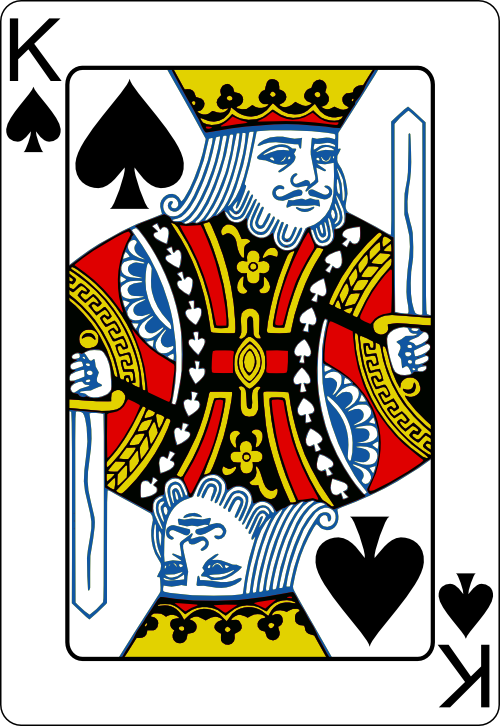
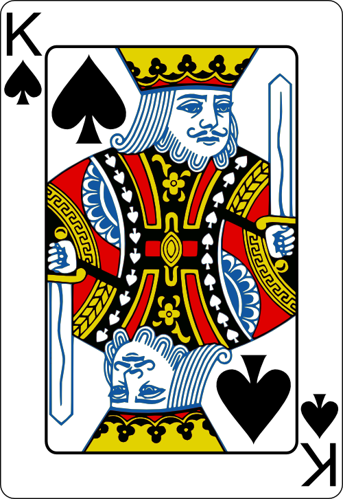

Poker Hand Rankings & Rules
Texas Hold'em basics:
Royal Flush
This hand contains five cards in sequence, all of the same suit, ending in Ace.


Straight Flush
This hand contains five cards in sequence, all of the same suit.


Four of a Kind
This hand contains all four cards of one rank and any other unmatched card (kicker).


Full House
This hand contains three matching cards of one rank and two matching cards of another rank.
 

Flush
This hand contains all five cards of the same suit, but not in sequence.


Straight
This hand contains five cards of sequential rank in at least two different suits.


Three of a Kind
This hand contains three cards of the same rank, plus two cards which are not of this rank nor the same as each other (kickers).

Two Pair
This hand contains two cards of one rank, plus two cards of another rank, plus one kicker.


One Pair
This hand contains two cards of one rank, plus three cards which are not of this rank nor the same as each other (kickers).


High Card
Made of any five cards not meeting any of the above requirements. The highest card determines the hand's value.


Game Flow
- Blinds: Two players post forced bets (Small Blind and Big Blind).
- Preflop: Each player receives two private cards ("hole cards"). Betting round begins.
- Flop: Three community cards are dealt face up. Another betting round occurs.
- Turn: A fourth community card is dealt. Another betting round.
- River: A fifth and final community card is dealt. Final betting round.
- Showdown: If more than one player remains, hands are revealed. The player with the best five-card poker hand (using any combination of their two hole cards and the five community cards) wins the pot.
Player Actions
- Fold: Discard hand and forfeit any chance to win the current pot.
- Check: Pass the action without betting (only possible if no bet has been made in the current round).
- Bet: Make the first bet in a betting round.
- Call: Match the amount of the current bet or raise.
- Raise: Increase the amount of the current bet.
The goal is to win chips by either having the best hand at showdown or by forcing all other players to fold.